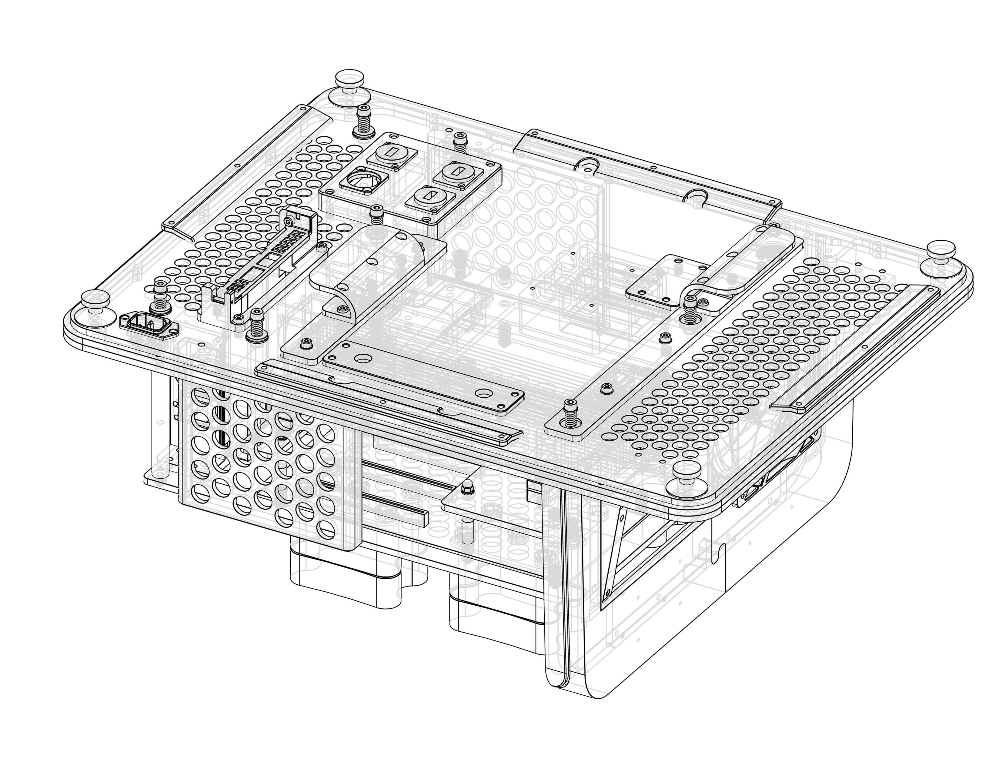
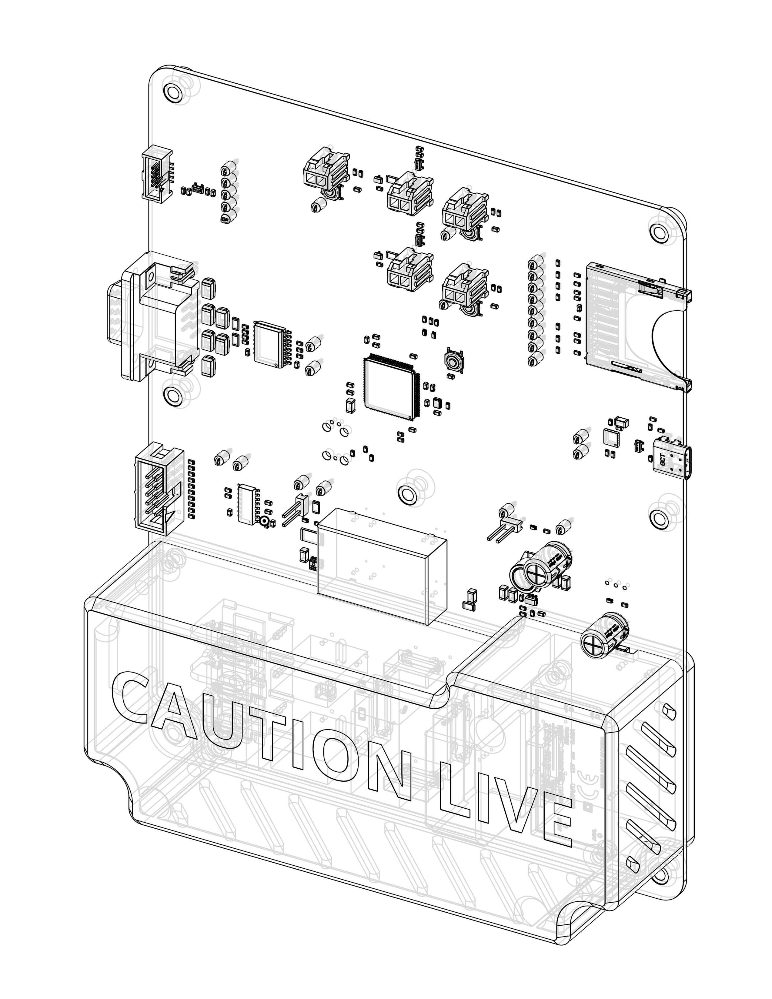
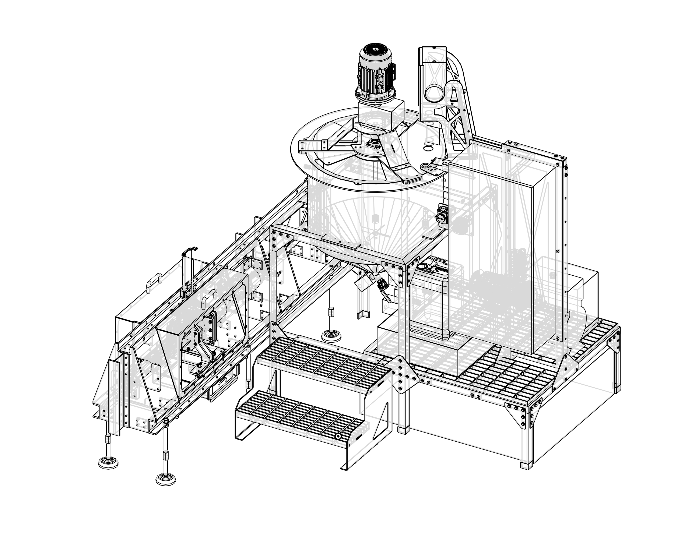
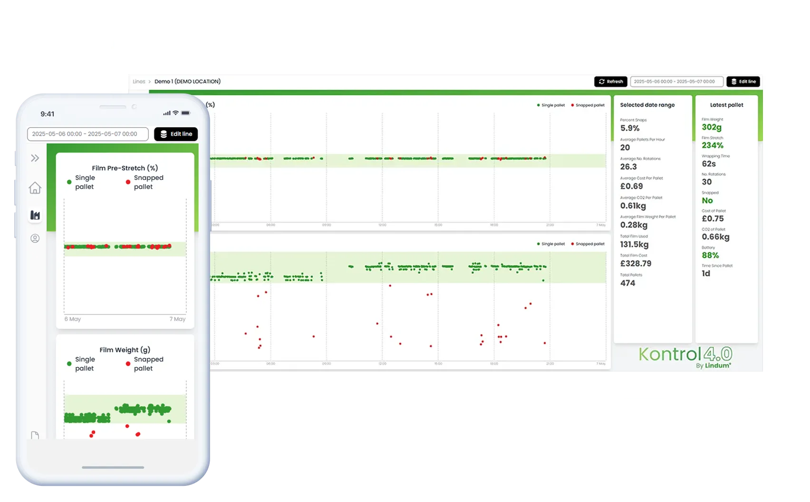

| Still going. | ||
| /// | SANGT - new robotic actuator that is number times more power dense. | Paddy Appelqvist, Andy Graham |
| /// | PSRR - power supply rejection ratio test board. | Thom Cousins |
| /// | number - in line PH sensor. | ?? |
| /// | ELYPSU - kilovolt power supply with arbritrary waveform output. | Toby Lane |
| /// | number - in line conductivity meter. | ?? |
| /// | RAND - Research, modelling, and design of redacted content interventions to mitigate pandemics. | Thomas Milton, Andy Graham, Sam Reyolds |
| /// | number - in line pressure sensor | Paddy Appelqvist |
| /// | PLIFUNC - a materials tester for high-voltage electrostatic actuators. | Tom Green, Tom Searle, Sam Reynolds |
| /// | LCRFILT - Low-cost air purifier. | Matt Farrow, Tom Green |
|
 |
FlexHEG_JL - FlexHEG demo box. Demo’d at the White House, Capitol Hill, redacted, Samsung, UK AISI. | Ulyssean, Phil Bladen, Andy Graham, Toby Lane |
|
 |
METZEROPS - Power supply for microbial electrolysis cells. | Toby Lane, Sam Reynolds |
| /// | PC - number litre tank for feeding a hydrogen electrolysis cell. | Andy Graham, Thom Cousins |
| /// | number - High pressure switching valve for bioprocess systems. | Andy Graham, Lydia Hall |
| /// | UKD1 - Science and tech policy proposals for the incoming 2024 UK government. | Thomas Milton |
| /// | number - UV spectroscopy system for biorpocess monitoring. | Toby Lane, Paddy Appelqvist |
| /// | AMODO_PLC1 - Amodo internal PLC | |
|
 |
MSILC1 - Pilot plant for mesoporous silica production | Matt Farrow, Toby Lane, Sam Reynolds, Andy Graham |
| /// | MSILC1 - 300L mixing and PH tank | Matt Farrow, Toby Lane, Sam Reynolds |
| /// | MSILC1 - 20 bar hydraulic filter press | Andy Graham, Matt Farrow |
| /// | MSILC1 - 5 litre hand cranked filter press | Andy Graham, Matt Farrow |
| /// | PC - Power supply for a hydrogen electrolysis pilot plant. | Sud, Thom Cousins |
| /// | FONX_hourly - Designing inflatable structures. | Thomas Milton, Andy Graham |
|
 |
K40 - Web platform for tracking industrial line performance anywhere in the world. | Phil Bladen |
| /// | ALE - Automated system for adaptive laboratory evolution | Matt Farrow, Toby Lane, Sam Reynolds |
| /// | BPUV1 - A model for evaluating the impact of installing Far-UV lamps to suppress pandemics. | Sam Reynolds, Thomas Milton |
| /// | SPIRE - Rotational bioreactor. | Andy Graham |
| /// | CBAPP1 - 30kV handheld electrospinner. | Andy Graham, Toby Lane, Phil Bladen |
| /// | ESHID - Medical device software zero to clinical trial in four weeks. | Phil Bladen |
| /// | RNABOX - redacted info bioreactor for RNA production. | Lydia Hall, Andy Graham, Thomas Milton |
| /// | RSTROB - Strobe driver for imaging rails. | Ollie Martin, Phil Bladen |
| /// | CQKD - FPGA for a quantum networking system. | Phil Bladen |
| /// | CQKD - High-speed DAC for quantum networking system. | Phil Bladen |
| /// | RRCBO - Switch electronics for a rail tribology system. | Toby Lane |
| /// | BIOS - Spectrophotometer for bioprocess analytics. Funded by Innovate UK | Matt Farrow, Ollie Martin |
| /// | IVT - Continuous flow bioreactor for RNA production. | Andy Graham |
| /// | EGS - An autopassaging bioreactor which keeps cells in their exponential growth phase. | Andy Graham, Phil Bladen |
| /// | RESPM - Pandemic transmission model to evaluate the performance of different respiratory PPE. | Andy Graham, Sam Reynolds |
| /// | EGS - In-line optical density meter. | Phil Bladen, Andy Graham |
| /// | K40 - Industrial IoT tracker scaled to 1000 units. | Phil Bladen, Andy Graham |
| /// | TRIB381 - Portable ultrasound machine. | Andy Graham, Phil Bladen, Sam Reynolds |
| /// | EGS - Prototype 100ml stirred tank bioreactor | Andy Graham, Phil Bladen, Sam Reynolds |
| /// | EGS - 600, 850 nm spectrophotometer | Phil Bladen, Andy Graham, Thomas Milton |
| /// | K40 - Custom wireless charger for IoT device charging | Phil Bladen, Andy Graham |
| /// | K40 - Proof-of-concept IoT tracker | Phil Bladen, Andy Graham, Thomas Milton |